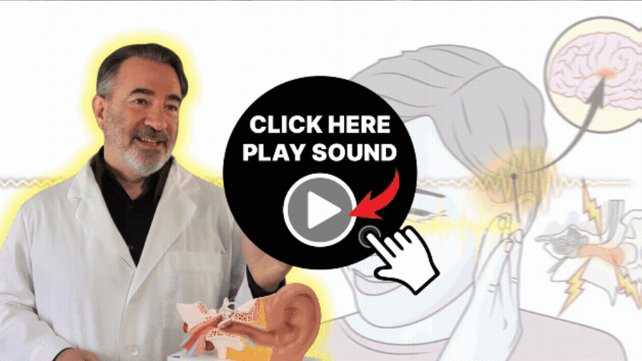

154 people are watching this presentation. Due to the high demand, it will only be available until: 02/20/2026

🔊 make sure your sound is on 🔊
Richard Coleman, 68
Can't believe it — I've been dealing with ringing in my ears for almost 3 years and this method actually worked! Finally sleeping peacefully again 🙏🏼🌊
Linda Matthews, 74
At first I was skeptical, but wow... after a couple of weeks, my tinnitus noise got so much quieter. This feels like a miracle!
James O'Neill, 79
This method really helped reduce my tinnitus.
Richard Coleman, 68
Can't believe it — I've been dealing with ringing in my ears for almost 3 years and this method actually worked! Finally sleeping peacefully again 🙏🏼🌊
Linda Matthews, 74
At first I was skeptical, but wow... after a couple of weeks, my tinnitus noise got so much quieter. This feels like a miracle!
James O'Neill, 79
This method really helped reduce my tinnitus.